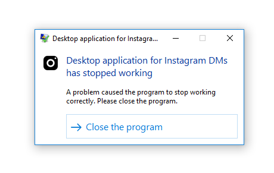
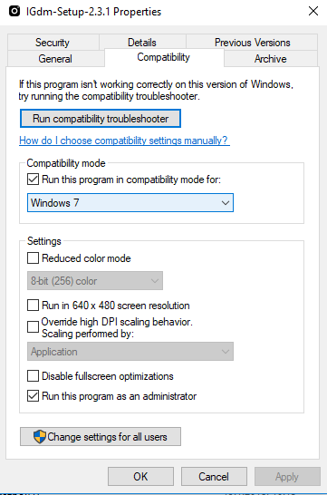

IGdm (Instagram Desktop Messenger) is a desktop application used for continuing your Instagram chats from your mobile devices to your computer—just like WhatsApp.
While IGdm is built to support all platforms (macOS, Linux, and Windows), there are some known issues you might encounter when trying to get it running on your Windows or Linux machines. Here’s a list of them, and possible workarounds.
There have been cases where the windows installer crashes while being executed with the following error:


As of version 2.3.1, the Linux version of IGdm comes as an AppImage which is a format for packaging applications in a way that allows them to run on common Linux-based operating systems, such as RHEL, CentOS, Ubuntu, Fedora, Debian, and derivatives.
However, in some cases, you might get the following error when you try to run it on a Linux machine:
This Package is not compatible
You need to convert the IGdm AppImage file into an executable file by following the steps here
Although this issue is not specific to any particular platform, it is a common issue.
As of version 2.3.1, IGdm does not have support for Instagram's two-factor authentication so if you are a user with a 2-factor authentication on, you might find yourself unable to login to IGdm
If possible, install the version that supports 2-Factor, i.e v2.8.0 or higher.
Other workarounds for this would be to:
After doing this, Instagram would recognize your IGdm device from that point on, and you would not be required to enter the 2-step verification code even if you log out and then log back in with IGdm.
Disclaimer: If you do not feel comfortable with temporarily disabling two-step authentication on your account, please don't go through with it.